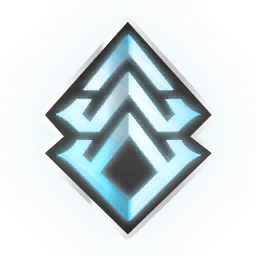

—
—
–MRLive world state & cycles
Live timers for open worlds, void fissures, Baro Ki’Teer and sorties
Open world cycles
Baro Ki’Teer (void trader)
Active void fissures (relics)
Find the fastest missions to crack your relics
Daily sortie
Archon hunt
Nightwave acts
Daily, weekly and elite acts for standing and rewards
Alerts & time-limited missions
Kuva siphons, arbitrations and classic alerts
Running operations
Steel Path
Invasions
Pick a side and finish 3 missions to claim the reward
Syndicate bounties
Active syndicate bounties and missions
What you are farming right now
Your open goals with the materials they need next
Quick Wins
Items you already own that still need levelling
Cheap to pick up
Straight from the market or a dojo lab — no long farming prerequisites
Warframes you are missing
Each frame is worth 6,000 mastery points
Progress by category
Item catalogue & mastery checklist
Filter every Warframe item by category & status — click a tile for drop sources and to set it as a goal
Resource & farming route guide
The best planets, missions and warframe setups for every resource
Baro Ki’Teer ducat & trade helper
Analyse your prime inventory, work out ducat yield and compare platinum market prices
Inventory
Relics, mods, arcanes, materials and blueprints from your game account
Import an Overframe build
Paste an overframe.gg build URL, or create your own build
Your builds
Notebook
Saved locally, automatically
Notes on items
Settings
Hotkeys and notifications
Global hotkeys
These work system-wide — including while Warframe is in the foreground. Windows then stops passing the combination on to the game, so do not pick something you need in a mission.
Inventory access
Your public Warframe profile contains no inventory. Reading one means looking up the temporary session credentials of the running game in its process memory — read-only, never writing, and only when you press the button.
Notifications
Argus checks for new void fissures every 45 seconds